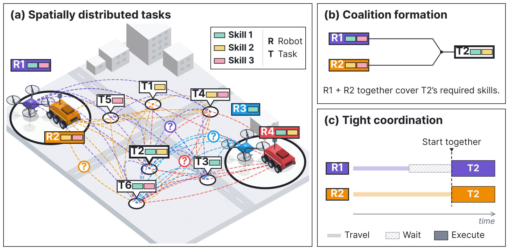
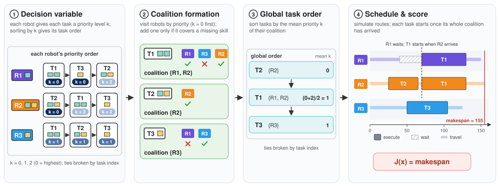

Discrete Model-Based Diffusion (Discrete MBD) is a training-free, sampling-based optimizer for
combinatorial optimization problems that performs denoising diffusion directly over discrete decision variables.
At every denoising step, it samples candidate solutions from categorical distributions and evaluates them with the cost function to steer the search toward low-cost solutions.
The Problem: Heterogeneous Multi-Robot Task Allocation

We consider $R$ heterogeneous robots and $T$ spatially distributed tasks, each requiring a set of capabilities.
A task may need a coalition of robots that must start it together, so coalition formation and scheduling must be
solved jointly. This falls into the XD[ST-MR-TA] category [1] (single-task robots, multi-robot tasks, time-extended assignment, with cross-schedule dependencies), where exact solvers scale poorly, so we
seek a fast solver that can re-plan online.
Why Diffusion?
Diffusion lets early iterations explore across the solution space, while later iterations concentrate on promising regions.
Model-Based Diffusion (MBD) [2], a training-free counterpart of DDPM
[3], uses diffusion to improve solution quality but is limited to continuous variables.
Discrete MBD extends it to discrete variables via D3PM [4].
Unlike most diffusion-based combinatorial solvers, Discrete MBD needs no training.
Discrete MBD on a 4-robot, 6-task problem: sampled routes concentrate on one plan as denoising proceeds.
A solution is a one-hot matrix $x \in \{0,1\}^{N\times K}$ ($N$ variables, $K$ values each). Instead of training a network to perform denoising diffusion like D3PM
[4], Discrete MBD uses the cost function to guide the denoising process.
It runs $M$ denoising steps; at step $i$, $\bar Q_i$ is the forward transition matrix that mixes each variable toward
the uniform distribution, $S_1$ and $S_2$ are the numbers of candidates sampled, and $\lambda$ is a temperature.
Start from a stationary distribution. $x^{(M)}$ is drawn uniformly over the $K$ categories of every variable.
Estimate the denoising distribution. Sample $S_1$ candidates from the proposal
$\varphi_i = \mathrm{Cat}\big(x^{(i)}\bar Q_i^\top\big)$. Weight each candidate by $p_0 \propto e^{-J/\lambda}$ and
combine with the closed-form posterior to get:
$$p_i\big(x^{(i-1)} \mid x^{(i)}\big) \approx \frac{\sum_{s} q\big(x^{(i-1)} \mid x^{(i)}, \tilde x_s\big)\, p_0(\tilde x_s)}{\sum_{s} p_0(\tilde x_s)}.$$
Greedy selection. Draw $S_2$ more candidates from $p_i$ and keep the
lowest-cost one among all $S_1+S_2$ as $x^{(i-1)}$.
Intuition
At its core, Discrete MBD repeatedly updates a categorical distribution over solutions until it concentrates on an optimal one.
The optimal solution is $y^\star = [0,0]^\top$ ($J = 0$). Running Discrete MBD gets us:
Left: heatmaps of the probability of each solution under the proposal $\varphi_i$ and the update $p_i$ (★ marks the
optimal solution $y^\star$). Right: the probability each assigns to $y^\star$ over the denoising steps.
Application: Coalition Formation and Scheduling
Sampling coalitions and routes directly mostly yields infeasible plans. Instead, we encode the problem by having each robot assign each task a
priority level (one categorical variable per robot-task pair), and a deterministic decoder turns any
sample into a feasible plan.

Decoding a 3-robot, 3-task example. ② Robots are visited by priority and added only if they cover a missing skill.
③ Tasks are ordered by their coalition's mean priority. ④ Each task starts once its coalition arrives.
Feasible by construction: no samples are wasted on constraint violations.
Shared task order: rules out circular waiting between coalitions.
Trade-off: the decoder is problem-specific.
Experimental Results
We compare with sampling-based optimizers (SA, CEM, LNS, SMC) under the same encoding and sample budget, Gurobi (30 s)
on unconstrained integer quadratic and polynomial programs (UIQP, UPO), and an RL policy and CTAS-D on the
SA-BT, SA-AT, and MA-AT task-allocation benchmarks from HeteroMRTA [5].
The benchmarks differ in robot skills and task requirements: in SA, each robot species has a single skill, while in MA
a species can have several; in BT, each task needs at most one unit of each skill, while in AT it can need multiple.
Below, Discrete MBD solves one instance from each benchmark: the current plan is on the left, its schedule on the right,
and the best makespan so far is shown at the top as the denoising proceeds.
SA-BT · 9 robots, 3 species, 3 skills, 20 tasks
SA-AT · 9 robots, 3 species, 3 skills, 20 tasks
MA-AT · 9 robots, 3 species, 3 skills, 20 tasks
17 / 18
UIQP / UPO settings where Discrete MBD is the best sampling-based optimizer
14 / 15
task-allocation settings where Discrete MBD is the best sampling-based optimizer
8 / 15
task-allocation settings where Discrete MBD is best overall, including RL and CTAS-D (second in the other 7)
References
G. A. Korsah, A. Stentz, and M. B. Dias, "A comprehensive taxonomy for multi-robot task allocation," The International Journal of Robotics Research, 32(12):1495-1512, 2013.
C. Pan, Z. Yi, G. Shi, and G. Qu, "Model-based diffusion for trajectory optimization," Advances in Neural Information Processing Systems (NeurIPS), 2024.
J. Ho, A. Jain, and P. Abbeel, "Denoising diffusion probabilistic models," Advances in Neural Information Processing Systems (NeurIPS), 2020.
J. Austin, D. D. Johnson, J. Ho, D. Tarlow, and R. van den Berg, "Structured denoising diffusion models in discrete state-spaces," Advances in Neural Information Processing Systems (NeurIPS), 2021.
W. Dai, U. Rai, J. Chiun, Y. Cao, and G. Sartoretti, "Heterogeneous multi-robot task allocation and scheduling via reinforcement learning," IEEE Robotics and Automation Letters, 10(3):2654-2661, 2025. Code and benchmarks: github.com/marmotlab/HeteroMRTA.
Citation
@misc{lee2026discrete,
title = {Discrete Model-Based Diffusion for Combinatorial Optimization in Multi-Robot Task Allocation},
author = {Lee, Haejoon and Vielmetti, Thomas Marshall and Wang, Xinyi and Panagou, Dimitra},
year = {2026},
eprint = {2611.13382},
archivePrefix = {arXiv},
primaryClass = {cs.RO},
doi = {10.48550/arXiv.2611.13382},
url = {https://arxiv.org/abs/2611.13382}
}